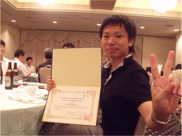

中島陽祐

| 研究テーマ | 銅酸化物高温超伝導体の擬ギャップ状態の解明 鉄系高温超伝導体の電子状態の研究 |
|---|---|
| 出身 | 長野県 |
| 卒業論文題目 | 角度分解光電子分光によるT* 相銅酸化物高温超伝導体SmLa1-xSrxCuO4 の電子状態の研究 |
| 修士論文題目 | |
| 原著論文 | 準備中 |
| 国際学会 |
5. 学会名：6th Korean-Japanese Student Workshop 題目：Synchrotron-radiation Angle Resolved Photoemission Study of Fermi Surfaces of BaFe2As2 ポスター発表 場所：Hiroshima University, Japan (2010.8) 4. 学会名：11th International Conference on Electronic Spectroscopy and Structure (ICESS11) 題目：Synchrotron-radiation ARPES study of three-dimensional electronic structure of BaFe2As2 ポスター発表 場所：Nara, Japan (2009.10) 3. 学会名：International Workshop on Strong Correlations and Angle-Resolved Photoemission Spectroscopy 2009 題目：Synchrotron-Radiation ARPES study of three-dimensional band dispersion of BaFe2As2 ポスター発表・口頭 場所：Zurich, Switzerland (2009.7) 2. 学会名：13th Hiroshima International Symposium on Synchrotron Radiation 題目：Tree-dimensional mapping of band structure of BaFe2As2 ポスター発表 場所：Higashi-Hiroshima, Japan (2009.3) 1. 学会名：12th Hiroshima International Symposium on Synchrotron Radiation 題目：Fermi surface of T*-phase cuprate superconductor SmLa1-xSrxCuO4 ポスター発表 場所：Higashi-Hiroshima, Japan (2008.3) |
| 国内学会 | 5. 学会名：第 23 回 日本放射光学会年会 題目：放射光角度分解光電子分光を用いたBaFe2As2の低エネルギー電子状態 場所：イーグレひめじ (2010.1) 口頭発表 4. 学会名：TRIP 会議 題目：低エネルギー放射光源を用いた角度分解光電子分光による鉄系超伝導体の３次元電子構造 場所：東京大学本郷キャンパス (2009.12) ポスター発表 3. 学会名：TRIP 会議 題目：鉄ヒ素系Ba122 型超伝導体の低エネルギー電子状態 場所：東京 秋葉原 (2009.7) ポスター発表 2. 学会名：PF研究会 題目：放射光角度分解光電子分光による BaFe2As2 の電子構造の三次元マッピング 場所：高エネルギー加速器研究機構 (2008.12) ポスター発表 1. 学会名：日本物理学会 第63回年次大会 題目：角度分解光電子分光によるSmLa1-xSrxCuO4のフェルミ面の研究 場所：近畿大学(大阪府) (2008.3) ポスター発表 |